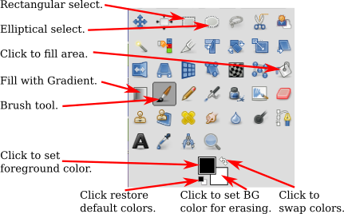
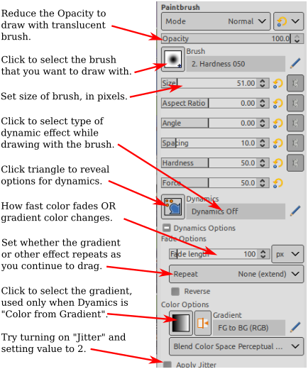
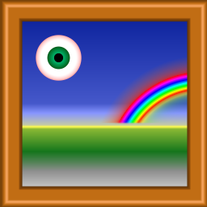

CS 424, Fall 2021:
The Gimp Image Processing Program
GIMP, the Gnu Image Manipulation Program, is a free program that has many of the capabilities of the better-known commercial program, Photoshop. Gimp can be used both for creating images from scratch and for modifying existing images. This lab covers only a very limited subset of Gimp's features. You can read more about Gimp in Section C.3 in the textbook. Parts of this lab are adapted from that section. It's also easy to find documentation and tutorials on Gimp, starting with its "Help" menu.
We will be using Gimp 2.10, which is installed on our Linux computers and is also the latest version available for download at gimp.org. Gimp is available for Windows and Mac OS as well as for Linux. (If you have Gimp 2.8, that will also work for this lab.)
When you first start Gimp 2.10, I recommend changing certain preferences. Open the "Preferences" dialog from the "Edit" menu, and look in the "Toolbox" section (under "Interface" in the list on the left). Turn off the "Use tool groups" option. Under "Theme," I prefer "Light," and under "Icon Theme," I prefer "Legacy." (The toolbox image below shows Legacy tool icons.)
Assignment
This lab asks you to create or edit six images. The images that you create should be submitted in a folder named gimp in your homework folder, in /classes/cs424/homework. The file names should clearly identify the exercises for which the files are being submitted. For example, you could give the files names such as ex1.png or exercise6.jpg. I will not look for your work until one week after the lab. The grading will be along the lines of: "Not done" for an F; "Minimal effort and incomplete" for a D; "Minimal effort" for a C; "Everything OK" for a B; or "Excellent" for an A. "Excellent" means that your work shows substantial and thoughtful effort, a willingness to investigate and experiment with Gimp features, and some attention to aesthetics.
New, Open, Save
Gimp's "File" menu has a "New" command that lets you create a new image from scratch. You will be able to set the size of the image and other properties, such as background color. And there is an "Open" command that lets you open an existing image for editing.
Saving is a little more problematic. The "Save" command will save an ".xcf" file, which is Gimp's own format. An xcf file is not an image, and it can only be opened with Gimp. It saves the full Gimp editing environment, which you would need for more complex projects if you want to be able to return to editing them later.
To save an image, instead of using "Save," you should use the "Export" or "Export As" command in the "File" menu. If you opened an image file for editing, the "Export" command becomes an "Overwrite" command that is used to replace the original image with the edited version. These commands let you save images in a wide variety of formats. For the lab, you should save your images in PNG or JPEG format. In particular, do not turn in xcf files!
Painting Tools
Exercises 1 and 2. For the first two exercises, you should use Gimp to draw two images from scratch, using Gimp's painting tools. Use several different tools. Try to make something that looks attractive and/or try to draw a (vaguely) representational image. Don't just turn in your scribblings! Spend some time experimenting before you decide what you want to draw to turn in.
Gimp has a wide variety of drawing tools, which you can find in the "Toolbox" in the upper left corner of the window. Point to a tool button to find out what the tool is for. Here is the Toolbox with a few annotations. You might not see exactly the same thing, but you can hover your mouse over a tool icon to see some information about the tool.

Below the Toolbox is the "Tool Options" dialog, which contains options for the drawing tool that is currently selected. The contents of the dialog change when you select a new tool. Here are the options for the Brush tool, which is probably the most basic and useful tool:

Use the "New" command in the file menu to create a new, empty image. Don't make it too big—maybe 640-by-480 or 800-by-600. Try out the Brush tool, and try changing some of its options. Try changing the foreground color (which is used for drawing) by clicking on the forgeground color patch in the Toolbox. Remember that Control-Z can be used to undo any change you make. Also, of course, you can always start over. Remember to spend some time experimenting with various tools before setting out to create your final images!
You'll notice that Gimp does not have tools for drawing shapes such as rectangles and circles. However, it is possible to draw such shapes using selections. The selection tools can be used to select regions in the image. For example, click the Rectangle tool, and drag the mouse on the image to select a rectangular region. Note that one of the options for the Rectangle select allows you to round off the corners of the rectangle. The Ellipse Select tool can be used to select oval-shaped regions. The Free Select (or Lasso) tool, which is next to the Ellipse in the illustration, can be used to select polygonal regions: Just click a sequence of points to select the vertices of the polygon, and click back on the initial point to close the polygon. You can also drag the Lasso tool to draw the outline of a region freehand. Once you have a selection, there are many things that you can do with it.
One important fact is that when there is a selection, you can only draw inside the selection—the area outside the selection is unaffected by painting tools, or by anything else that you try to do the image!!
The Bucket Fill Tool, which looks like a spilling paint bucket, is especially useful with selections. Choose the bucket tool, and set its option to "Fill whole selection". Then click inside the selected area to fill that area with color. Also try setting the "Pattern fill" option for the Bucket tool, which allows you to fill the selected area with a pattern. To change the pattern that is used, click on the image of the pattern, just below the "Pattern fill" option.
Drawing straight lines in Gimp is a little strange. To draw a line with the brush tool, click the image and release the mouse button. Then immediately press the shift key. Move the mouse while holding down the shift key (without holding down any button on the mouse). Then click the mouse again. A line is drawn from the original click to the final click. The same technique works with other tools, including the pencil, erase, and smudge tools.
You will certainly want to try the Gradient Tool. A gradient is a sequence of colors, arranged in some pattern. Many different gradients are available in the Gradient tool options; click the image of the gradient in the Tool Options, to choose a different gradient.
Important Notes about the Gradient Tool: In the Tool Options for the Gradient Tool, I suggest turning on "Adaptive supersampling" to give smoother gradients. And I suggest turning on "Instant mode" to make the tool easier to use.
 Apply a gradient by dragging the mouse to specify the points where the color sequence begins and ends. The colors can be applied in various shapes; try changing the "Shape" option to see how this works. If there is no selection, then the gradient that you draw fills the entire image, although parts of the gradient might be transparent or translucent. (Remember that when there is a selection, you can only modify the part of the image inside the selection.)
The picture on the right, for example, was made entirely with the Gradient tool, using the "Square Wood Frame" gradient with the shape option set to "Square" and the "Radial Eyeball" and "Radial Rainbow Hoop" gradients with the shape set to "Radial." (A selection was used to limit the size of the rainbow, which would otherwise have been a full circle.)
The Gradient tool can be used for some neat effects. The background image for this page was prepared from an original image with one application of the Gradient tool, with the foreground color set to white and the gradient set to the "FG to Transparent" gradient. To make a similar background image:
{kind=link}
{kind=link}
- Start with an existing image. Cut a vertical strip from the image to use as the basis for the background. To do that, use the Rectangle Select tool to select the region that you want to use, then use the "Crop to Selection" command from the "Image" menu.
- Choose the Gradient tool, and select the gradient named "FG to Transparent".
- Change the Foreground Color to white. You can do this by clicking the little Swap Colors arrow next to the color patches in the Toolbox.
- Now, drag on the image from right to left. The point where you start the drag will be white (the foreground color), while the point where you end will be unaffected. The white color will fade in over the length of the drag. Use Control-Z to undo, and try again, until you get exactly what you want.
You will want to try some of the other tools as well, such as the Smudge tool, the Eraser, and maybe the Clone tool. For help on using any tool, look at the message in the bottom of the image window while using the tool.
{kind=link}